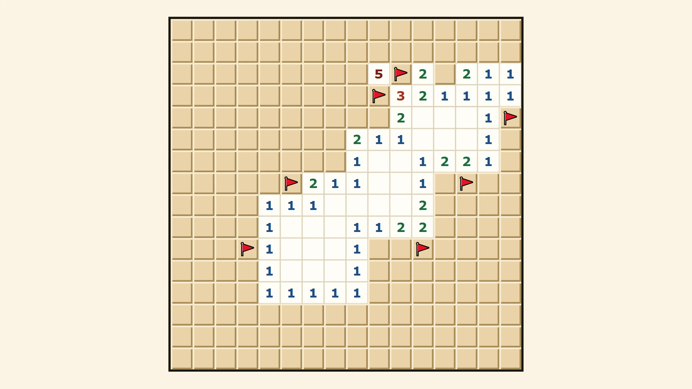
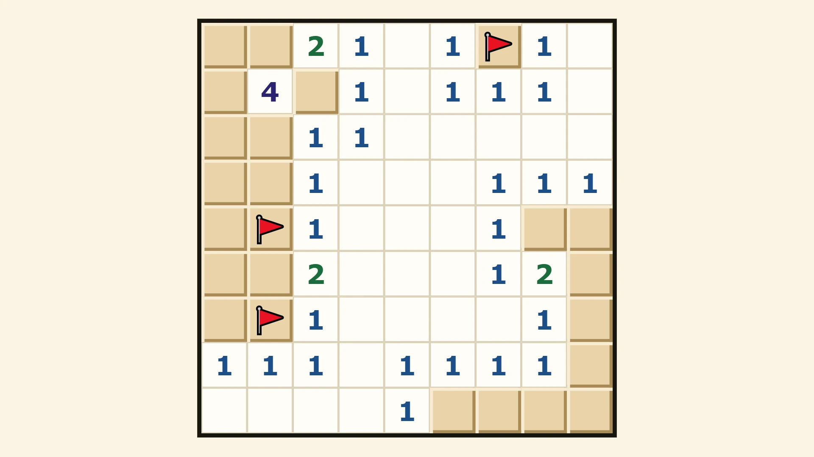
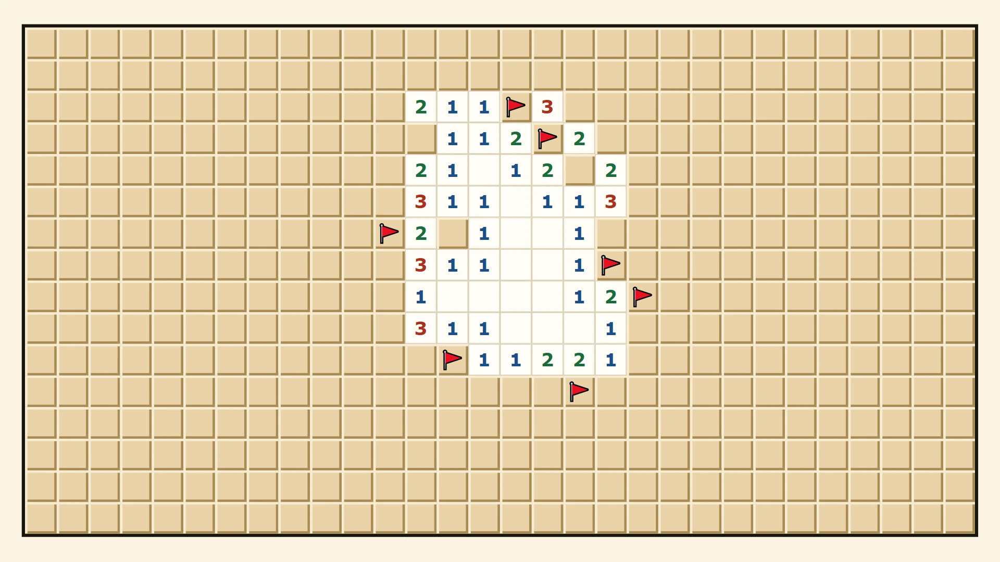

Sweepwise — free Minesweeper online, no download
Classic Minesweeper in your browser: three difficulties, custom boards, and a first click that always opens an area.


How to play Minesweeper
The board hides a number of mines. Click a square to open it. If it is a mine, the game is over. If it is not, it shows a number: how many mines touch that square, counting the eight around it. A square with no mines around it opens its neighbours for you, so one click can clear a whole area.
Use the numbers to work out where the mines are, and mark each one with a flag (right-click, press and hold on a phone, or switch the Flag button on). You win when every square without a mine is open. You do not have to flag every mine to win; flags are notes for yourself.
The first click is always safe
The mines are laid after your first click, never on that square or the eight around it. So the first click always opens an area to start from, rather than a lone number that leaves you guessing.
Chording: open around a number in one click
When a number already has that many flags around it, click the number and every other square around it opens at once. It is how fast players clear a board. If one of your flags is in the wrong place, the real mine goes off, so flag carefully.
Beginner, Intermediate, Expert and custom
Beginner is 9 by 9 with 10 mines, Intermediate 16 by 16 with 40, and Expert 16 by 30 with 99. On a narrow phone screen Expert turns upright so the squares stay big enough to tap. Custom lets you pick any board from 5 to 30 squares a side and the number of mines.
A timer and your best times
The clock starts on your first click and stops when you win or hit a mine. Your best time on each difficulty is kept on your device, with no account.
Mouse, touch or keyboard
With a mouse, left-click opens and right-click flags. On a touch screen, tap to open and press and hold to flag. With a keyboard, the arrow keys move between squares, Enter or Space opens, and F flags.
More puzzles and board games
For words, Wordburrow holds a crossword, a five-letter word guess and more. For a board game against the computer, try Rookwise or Jumpwise.
More like this: 2-player games online · Multiplayer browser games